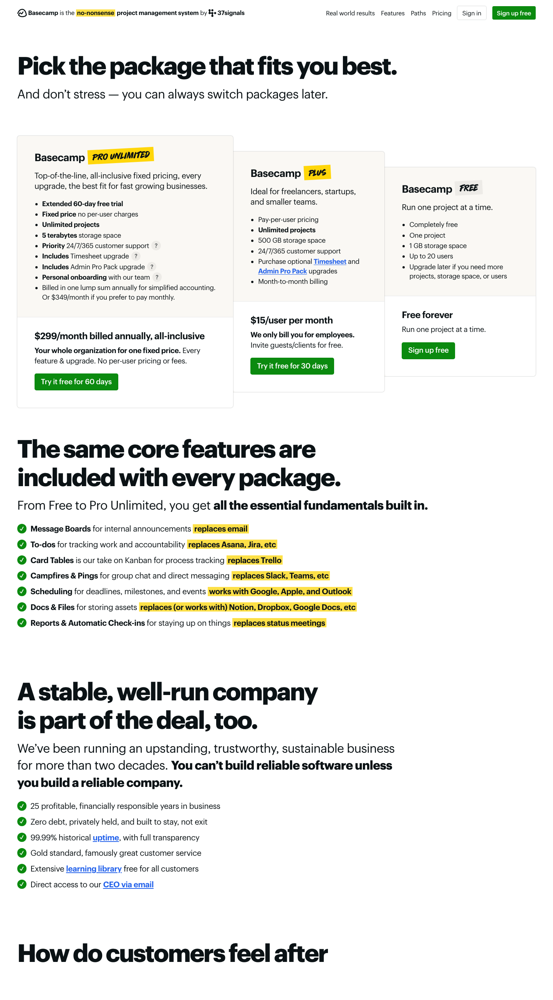

Pricing Page Visual

Basecamp shows Free, Plus, and Pro Unlimited as one pricing surface: limited free usage, employee-priced growth, and a fixed organization package.
The key thing to notice before scrolling is that Plus changes with billed employees, while Pro Unlimited removes per-user charges.
Core Insight
- What is monetized: Employee participation on Plus and organization-wide rollout on Pro Unlimited.
- What changes the bill: The bill changes when billed employee count rises on Plus, when the account selects Pro Unlimited, or when flat account add-ons are purchased.
- Who pays more and why: Smaller teams pay more as employee count grows on Plus; organizations that value predictable broad rollout pay the higher fixed Pro Unlimited price to remove per-user expansion friction.
Monetized: employee participation and whole-organization rollout · Bill changes: billed employees, package choice, and flat add-ons · Higher payers: growing organizations that want predictable broad adoption.
Pricing Logic Deconstruction
The bill changes when billed employee count grows on Plus, when the buyer switches to the fixed Pro Unlimited package, or when flat account upgrades are added.
Basecamp charges Plus at $15 per employee or full user per month, while guests and clients do not become billed employees.
Plus scales with employee count; Pro Unlimited replaces per-user movement with one organization-wide price.
The buyer moves toward Pro Unlimited when predictable broad rollout matters more than managing each billed employee.
Basecamp's pricing logic is not just a plan ladder. The variable driver is billed employees on Plus; the strategic move is giving growing organizations a way to stop the bill from moving with each additional user.
Pricing Matrix / Mechanism Logic
Primary component: driver_logic
Employees and full users increase the Plus bill. Guests, clients, and contractors are excluded from that meter.
Spend moves upward as more employees need access, so growth reopens the budget question.
The account pays $299 per month billed annually, or $349 month-to-month, and per-user movement stops.
Pricing Architecture
The structure has three named packages, an employee-versus-guest billing distinction, and flat account-level upgrades that can be purchased separately on Plus or bundled into Pro Unlimited.
Free, Plus, Pro Unlimited
Employee meter versus collaboration edge
Employees and full users are the billed user class on Plus.
Guests, clients, and contractors can be invited without being billed as Plus employees.
Pro Unlimited prices the account as a whole rather than counting users one by one.
Decision Tension Layer
The tension comes from the named pricing drivers: billed employee count, package choice, and the flat account upgrades that sit around the cap.
The buyer must estimate whether billed employee growth on Plus will make variable pricing feel worse than the fixed organization package.
The Pro Unlimited package removes per-user charges, but the buyer still has to accept a larger fixed price and decide whether annual billing fits the account's confidence level.
Timesheet, Admin Pro Pack, storage, support, and onboarding can justify Pro Unlimited for some buyers, while others may want broad access without the full account-control bundle.
Strategic Opportunity
References
- 37signals. (n.d.). Basecamp pricing. Retrieved April 26, 2026, from https://basecamp.com/pricing/
- 37signals. (n.d.). Try Basecamp. Retrieved April 26, 2026, from https://basecamp.com/try-basecamp/
- 37signals. (n.d.). New in Basecamp. Retrieved April 26, 2026, from https://basecamp.com/new/